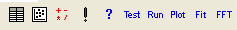
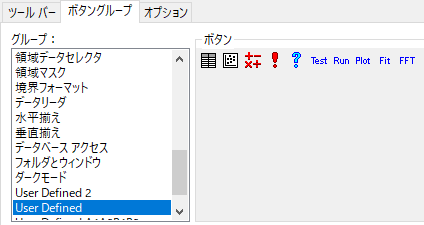
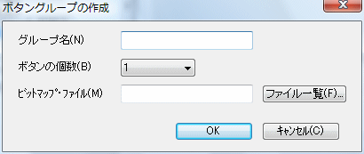
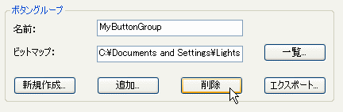

ユーザ定義およびカスタムツールバーとツールバーボタン
UserDef-Custom-Toobar-Button
Originには、ユーザ定義という組込みのボタングループがあります。 これらのボタンは個々に選択することができ、ツールバーからカスタムプログラムにアクセスするために、自分のスクリプトやコードをボタンと結びつけることができます。 さらに、Originは自分で作成したビットマップを使って、新しいボタングループを作成することもできます。
ツールバーの表示/非表示
Originのインターフェイスですべてのツールバーを非表示/表示
- 表示：ツールバーを非表示メニュー
または
- ホットキー Ctrl+Alt+R を押す
｢ツールバーのカスタム化｣ダイアログボックスを使って、ツールバーを表示したり、非表示にすることができます。
Originの指定するツールバーを表示/非表示する
- メニューから表示：ツールバーを選択します。
- 『ツールバー』タブを選択し、Originが実行するとき表示させるツールバーを選択し、 閉じるボタンをクリックします。
自分のプログラムを実行するために ユーザ定義ツールバーボタンにプログラムを結びつける
「ユーザ定義」ボタングループにはプログラムがされていないボタンが10個あり、操作を実行するためのプログラムと結びつけ、実行するのに使用することができます。

｢ユーザ定義｣ボタングループにあるボタンをカスタムタスクと結びつけるには
- 「ツールバーのカスタム化」ダイアログボックス(「表示：ツールバー」)を開き、『ボタングループ』タブを選びます。
- 『グループ』リストから「ユーザ定義」を選びます。

- 『ボタン』グループのボタンを選択します。
- 『ボタン』グループの｢設定｣ボタンをクリックします。 「ボタンの設定」ダイアログボックスが開きます。
- 「ボタンの設定」ダイアログボックスを編集し、OKボタンをクリックします。カスタムボタンのプログラム化が完了します。
カスタムタスクを実行するボタングループを作成する
｢ユーザ定義｣ボタングループのプログラミングボタンに加えて、Originにカスタムボタンの新しいグループを追加できます。 これを行うには、3つの方法があります。
方法1: 新しいボタングループの作成
- 『ボタングループ』グループの｢新規作成｣ボタンをクリックします。 「ボタングループの作成」ダイアログボックスが開きます。

- 以下の項目を指定します。
- ボタンの『グループ名』 既存のボタングループ名を入力する場合、Originは、ボタングループに対して、名前を変更するか、統合するか、置き換えるか を尋ねます。
- グループ内の『ボタンの個数』(最大50個のボタンを持つことができます。)
- ボタンのビットマップファイル ビットマップは16色のビットマップにする必要があります。 さらに、ビットマップは、カスタムボタングループ内の各ボタンが16ピクセル×16ピクセルで構成される必要があります。 例えば、5つのボタンを持つボタングループを作成する場合、16 × 80ピクセルのビットマップを使用します。 Originは『ボタンの個数』で指定した分のビットマップを使用します。
- OKをクリックします。 入力したすべての情報が有効なら、Originは「名前を付けて保存」ダイアログボックスを開きます。 デフォルトでは、グループ名がファイル名テキストボックスに表示されます。
- 「保存」ボタンをクリックし、指定した初期化ファイルに新しいボタングループの設定を保存します。
これらのステップが完了したら、『グループ』リストボックスに新しいボタングループが表示されます(「ツールバーのカスタム化」ダイアログの『ボタングループ』タブ) 。 グループ内のボタンに対する設定は、前項『自分のプログラムを実行するために ユーザ定義ツールバーボタンにプログラムを結びつける』で述べたようにカスタマイズすることができます。
方法2: 他の場所にあるカスタムボタングループをOriginプログラムフォルダにコピーする
カスタムボタングループ(｢ユーザ定義｣グループを含む)は、以下のファイルと関連付けがされています。
- 関連する設定(INI)ファイル：初期化ファイルは、「ボタングループ」グループの「新規作成」ボタンをクリックして、「ボタングループの作成」および「保存」ダイアログを編集します。
- ビットマップファイル：ビットマップファイルは、「ボタングループの作成」ダイアログボックスで指定します。この情報はボタングループの初期化ファイルに追加されます。
- LabTalkスクリプトファイル(OGS)とサポートファイル：LabTalkスクリプトファイルを「ボタン設定」ダイアログボックスのグループ内の各ボタンに対して指定します。この情報はボタングループの初期化ファイルに追加されます。
他のOriginユーザ(ネットワーク上のユーザなど)が、あなたが使いたいカスタムボタングループを持っている場合
- そのユーザの設定ファイル(INIファイル)、ビットマップファイル、LabTalkスクリプトファイル、サポートファイルをあなたのOriginフォルダにコピーします。
- Origin(Pro)を起動します。
- メニューから「表示：ツールバー」を選び、『ボタングループ』タブを選びます。
- 『ボタングループ』グループの｢追加｣ボタンをクリックします。 「ボタングループの追加」ダイアログボックスが開きます。
- ボタングループの設定(.INI)ファイルを指定して、OKボタンをクリックします。 新しいボタングループが『グループ』リストボックスに表示されます。
ボタングループを交換する最も簡単な方法は、.OPX ファイルを作成する方法です(方法3をご覧ください。)
方法3: OPXファイルにエクスポートしたボタングループをインストールする
OPXファイルにエクスポートしたボタングループをインストールすることについては、以下を参照してください
カスタムボタングループを修正する
「ツールバーのカスタム化」ダイアログ(「表示：ツールバー」)の「ボタングループ」タブにある編集オプションを使って、カスタムボタングループのビットマップを削除や修正、カスタムボタングループのボタンを追加や削除することができます。
- 「グループ」リストボックスからファイルグループを選択します。
- 「ビットマップ」テキストボックスで新しいパスとファイル名を入力し、参照ボタンをクリックして、新しいビットマップファイルを指定します。
|
Note: 「ユーザ定義」ボタングループのビットマップを修正することもできます。
|
- 削除したいボタンを選択します。
- 『ボタン』グループの｢削除｣ボタンをクリックします。
- 「グループ」リストボックスから削除したいボタングループを選択します。
- 『ボタングループ』グループの｢削除｣ボタンをクリックします。

- グループを削除する前に「注意」メッセージボックスが確認のために現れます。
- 「はい」をクリックすると、Originは 「グループ」リストボックスからカスタムボタングループを削除します。この(削除された)グループからのボタンがツールバーに配置されていた場合、それらのツールバーはグループを削除した後は機能しません。
|
Note: 組込のボタングループを削除することはできません。
|
- カスタムボタングループのビットマップを修正するには
- 「グループ」リストボックスからファイルグループを選択します。
- 「ビットマップ」テキストボックスで新しいパスとファイル名を入力し、参照ボタンをクリックして、新しいビットマップファイルを指定します。
|
Note: 「ユーザ定義」ボタングループのビットマップを修正することもできます。
|